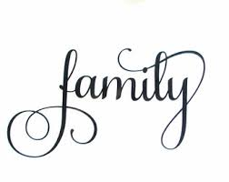

Here is me at a glance.
It's seems like the easiest to write yet it is the hardest. Apparently that is how paradoxical life is. The simplest often are the hardest and vice versa. I can summarise my whole being into one item. I am a person who believes in and embraces positive
change in the society. Change can take plae in so many different forms, for example, technological transformations, political changes, educational improvements, health improvements, to mention but a few. All these changes create a better environment
for growth, interaction, and improvement in the standards of living.

About how I was raised to what I am now.
Kennedy Peter Odhiambo is my full name. I was born in a humble family in Pumwani Hospital by loving parents, Mr. Richard Onyango and Mrs. Florence Achieng'. Having a Christian upbringing herself, my mother raised me in a staunch Christian background
in the Anglican Church where we used to fellowship. At the age of 14, my father left my mother, two siblings and I to the care of my mother who was jobless by then. My elder sister, Rolline Atieno, had to drop out of Multi Media University where
she was pursuing a course in Mass Communication. I had just done my K.C.P.E Examination and was waiting for a calling letter to join high school. My brother, Collins Obure who was in Standard 6 by then also had to leave school. I received my calling
letter to Maranda High School but there wasn't any way I could join the school due to shortage of finances. My star of hope even grew even dimmer when all my bursary application forms were rejected. I stayed home for a better portion of the year.
With my mother's constant words of advice and courage (Though you could always see a look of despair and sorrow in her eyes), I decided to re-sit for my primary school K.C.P.E examinations in 2012. After then I was called to Alliance High
School. I was lucky enough to get recognised by the area Member of Parliament, Dr. James Nyikal who took care of my shopping expenses and paid for the first term school fee. I constantly sought help until one day, thanks to my History teacher Mdm.
Okullo and Goegraphy teacher Mrs. Olang', I met my mentors, Mr. Edwin Macharia of Dalberg Global Development Advisors and Mrs. Lorna Irungu of Nation Media Group who have seen me through my studies and ensured I got the best of everything in school
and even after school. My mother sheds tears of joy whenever she remembers where we were and our current state, thanks to the two God-sent angels. That is my life in a nutshell. If I were to narrate the whole of it I would have filled a whole series
of novels.